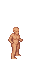
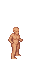

Installation
You can select a different tileset than the one included with the game. You have two options: stable or latest. The stable version is tested and reliable, while the latest version is updated frequently and may have new features or bug fixes.
Stable
The easiest way to download the tileset would be from the latest release. It is a stable tileset build which you can safely put into the game and run.
- Download the latest release from the releases page (Not the source code !).
- Extract archive once it's downloaded.
- Put UltimateCataclysm folder from extracted files into your
cataclysmdda\gfxfolder. It should look like:cataclysmdda\gfx\UltimateCataclysm.
[!WARNING] If you have "Missing "tile_config.json" file" error upon loading the tileset, this means that you have downloaded and extracted the source code, and not the tileset.
Develop
The most up to date build of the tileset (per commit). Might be broken.
- Locate the most recent commit that has a green check right next to it here.
- Click on the green check -> "CI Build / CI Build" Details
- Find Artifacts drop-down menu, click on it, and then select the artifact.
- Proceed with step 2 and 3 from stable installation.
[!NOTE] Red cross means that the build has failed and no artifacts were produced.
Building
To create your own tileset, test new sprites, or contribute to the project, please follow the instructions for your operating system:
- For Linux, macOS, or other Unix-like systems, see this guide.
- For Windows, see this guide.
These guides will help you set up the required tools and steps to build the tileset from the source files.
Windows guide
Guide for Windows users, without touching the Command Line.
First steps
[!NOTE] It is a good practice to create new branch at the start. Name it "playground" for example. Your repo is your own private space. You can do whatever you want in it without affecting the original project. However, if you want to contribute to the project, you need to follow some guidelines. One of them is to keep your master branch clean and empty, and do your work in a separate branch. This will make it easier for you to sync your changes with the upstream repo and create pull requests.
Now you have source files on your drive and some tools as well.
These tools will help you managing multitile objects, setting up the environment and composing tilesets.
The Game
The easiest way to get the game is to use the CDDA Game Launcher. With the launcher, install the latest experimental release.
Tools need to know where to put composed tileset. So you have three options:
- copy
set_game_path.cmdto your game dir and double-click it. - drag and drop game folder over
set_game_path.cmdscript. - or just double-click it and type path to the game folder.
[!NOTE] if you change your game folder later, you can repeat this step and provide new path.
Tilesets and Windows
Some tilesets reuse assets from other tilesets. This can be done by using symlinks, which are shortcuts that point to another file or folder. However, symlinks are disabled by default in Windows systems. If you want to compose tilesets that use symlinks (such as Altica or Ultica-ISO), you need to enable them.
To enable symlinks, go to the tools folder in your local repository and double-click on git_symlinks.cmd. This will run a script that will configure your Git settings to allow symlinks. 2
Python and Windows
If you dont have Python istalled yet you need to disable app execution alias.
Go to -> "start" and type "Manage App Execution Aliases". Go to it and turn off "Python"

Make sure you are not using the Python version from the Microsoft Store. This version is incompatible with the tileset composing tools. You can uninstall this version safely from your system. The tools from the repo will install Python 3.12 for you, which you can use for any purpose.
Open the tools folder in your local repository and double-click updtset.cmd
Select any common tileset (like MShockXotto+) for the first runs until it finally compose.
At the first run script will try to install Python using winget. In case of successful install it would stop and ask you to relaunch it again.
[!WARNING] If script failed to install Python you should do it manually from python.org.
During installation, check "Add Python to PATH".
Python and components
The script will first check if Python is installed on your system. It will print the Python version and verify that the pyvips module and the libvips library are available.
- If pyvips is missing, the script will try to install it automatically. This step should not cause any errors, only informational messages.
- Next, the script will check if there are any libvips binaries in the system. If not, the script will attempt to download the 8.15 version and unzip it using VBS into the user’s home folder. Then, the script will call set_vips_path.cmd with this path.
If the script successfully adds libvips, it will stop and ask the user to run it again.
[!WARNING] If script failed to install libvips you should do it manually.
Download the latest libvips distribution from libvips.github.io
get vips-dev-w64-web-#.#.#.zip NOT vips-dev-w64-all-#.#.#.zip
extract files somewhere and drag and drop this folder onset_vips_path.cmd
Final
Maximum at third run script should compose tileset and propose you to check it in game. If something goes wrong, read the script's output carefully!
[!TIP] You may ask for help at tileset Discord server.
[!TIP] To set a tileset to compose permanently, double-click
set_tileset.cmdand select the desired tileset.
If not set permanently, the update script will allow for interactive selection of a tileset.
Note: This sets the environmental variableCDDA_TILESET. Delete it if you want to select tileset again.
[!TIP] When scripts ask you to restart your computer it may be necessary on some systems. But you can try and skip reboots.
Some tasks can be done much faster and easier with command line actually. So you can try to run winget install Github.GitHubDesktop
2: That tool will guide you how to enable symlinks in your system and turn them on for your local repository.
Nix Installation
Documentation of developing tileset with Nix.
Prerequisites
You will need:
- Python 3
- Libvips
- pyvips (install it via python pip:
pip install pyvips)
Build
As this repository uses flakes, it's possible to build any of the tileset (not only UlitCa) using nix build .#{name} command. For example:
# This will build UltiCa
nix build .#UltimateCataclysm
# But this will build Mushroom Dream
nix build .#Mushroom-Dream
And the result will be in result directory, ready to put into the game. If you want to link the result to the different directory, use --out-link {path} argument.
Devshell
Tileset flake also provide a simple devshell with python and vips to run tools such as compose.py or generate_preview.py.
# Enter the devshell
nix develop .
# This now works
python3 tools/compose.py --use-all gfx/UltimateCataclysm out
Or if you have direnv enabled, it will automatically enter the devshell upon opening the repository.
Style guidelines
We have rules for sprites these days. Not because it's important to keep the tileset consistent, but also to make things recognizable on the screen in the game. Without strict rules, UltiCa will quickly turn itself into a pixels mash up. Rules and guidelines are divided between groups:
General style guidelines
A bunch of rules that can be applied for every type of sprite.
Use a limited set of colors as in pseudo-16 bit format

This is rule is one of the main rules not only for this tileset, but pixel art in general. Each "colour block" should use 3-6 colors for shades. For example a blue shirt might have one light blue highlight, two medium blue main colours, one dark blue shade, and one very dark blue-green shade. See colors tutorials section on lospec if you're having troubles with palette.
Try to draw with realistic proportions

Small items/creatures should be small. But if feel that they are too small, it is ok to make them bigger for sakes of ability to be recognized. Be careful about sizes.
Use hard edges on foreground objects

.. such as items and monsters. This is important because it makes things much more recognizable when zoomed out.
The default light source is assumed to come from above and to the left.

Items
Maximum item size is 32x32; small items should fit within 16x16

This is continuation of the general rule.
Item tiles should be as close to scale as they can be while still recognizable

When in doubt, err on the side of larger, but avoid filling an entire 32x32 tile with a single nail or it would look like a nail as large as a survivor. Even for single items, putting multiple items into the icon could give it more recognizability without making it look comically huge.
Containers should be drawn empty

Like jars or bottles. The game will use the same tile no matter the actual content of the item.
100% black underline without shadow
// TODO: image
No shadow will make sure that players don't confuse several big items with furniture. Black underline helps to identify an item in the game world.
Consider placement on tables

Table surfaces usually occupy top 19 pixels of a 32x32 sprite, try fitting your items there when possible.
Overlay
Rules about hair, mutations, worn clothes, wielded items and survivour's skin.
32x64 tile base
Use these as reference (base male and base female sprites):
 

Creatures
Take appropriate tile size
Consider 32x64 a default template for human-sized creatures:
Monster sprites should have ~8px offset from the ground
// TODO: image
To give them a 3d look.
Facing to the right by default
And remember that tiles are mirrored when creatures move.
Monsters should drop shadows when possible
// TODO: image
Put shadows in a bg field in json, use shadow_<width>x<height>_<size> template. You can find shadow files in the root of any size directory (e.g. pngs_normal_32x32).
Terrain & Furniture
Walls and floors are 32x32, other things may vary
// TODO: image
Again, you should size things accordingly to its size in the world.
Keep color value level in medium range
// TODO: image
It's important to keep value level of the background objects (terrain, furniture) about 60-80, because it would define foreground entities (e.g. monsters) better.
Keep table surfaces consistent
When drawing something similar to a table keep in mind that currently table surfaces usually occupy top 19 pixels and items may be optimized to look like placed in that area.
Tileset structure
// TODO: rewrite
- Put files into the best appropriate folder (terrain, furniture, mutations, items, etc).
- Give files a name based on the JSON ID they suit, eg
t_floor. - If multiple files apply to that ID, make a subfolder eg
terrain/t_floor/for all the views. - For the moment, there isn't a clear naming convention after that. Working on it.
Autotiles
Autotiles, referred to in CDDA game code as "multitiles", are tiles that display differently depending on their relationship to other sprites in the group. Water is a classic example: drawing water as an autotile allows it to display as a single body with edges, instead of either individual little puddles, or a large blue expanse with no shoreline.

To simplify drawing these tiles, we use templates with 4x4 and 8x6 grids of all the tile boundary types in a predictable order. Transparency allows overlapping the same tiles on different backgrounds, so we don't have to redraw the water boundaries for dirt, grass, rock, etc. - we draw the water once, and the transparent edges allow it to overlap dirt, grass, rock, and so on.
The 4x4 template supports only current game code:

Black space indicates background, and white is the shape of the furniture or terrain.
And the 8x6 is an attempt at future-proofing the project that was created before 4x4. Currently, only a few of these tiles are supported in CDDA, although some day it would be nice to have all of them available:

The sixteen tiles in the top-left 4x4 block contain the basic boundary shapes that are just the 4x4 template in a different order.
Both terrain and furniture tiles may use this template. Terrain like grass or fences:


and furniture like bathtubs or benches:


With the current tile support there are two ways you might use an autotile, demonstrated by the bench and table autotiles. What we're missing is the ability to draw different types of diagonal connections. Without that, we have to represent things that are likely to have diagonal connections or unlikely to have them in different ways.
These break down into a few parts as recognized by the game.
- corner: These attach two adjacent tiles perpendicular to the tile in question.
- edge: These tiles connected either on the top-bottom or left-right sides, in a straight line.
- unconnected: This is a tile just hanging out alone, unconnected to its neighbors.
- center: This is a 4-way intersection tile, connected on all sides.
- end_piece: These tiles are connected only on one side.
- t_connection: These are the 3-way intersection tiles.

Things like benches
The bench autotile is an example of an autotile that we don't really expect to be displayed double-thick most of the time. Generally you're going to draw a bench like this:
.....
bbbbb
.....
rather than like this:
bb.bb
bb.bb
bb.bb
For this reason, the t_connection and center art for the bench are drawn as 3-way and 4-way intersections.
Things like tables

The table autotile is an example of a tile you would often expect to be drawn double-thick, connecting to itself. While you might also draw it one tile wide, two or more tiles of contiguous table are common. For this reason you can't assume there's an edge visible on a t_connection or center tile. Consider the center tile in a table like this, represented by a capital T amidst lower case:
.....
.ttt.
.tTt.
.ttt.
.....
That center tile can't be drawn as a 4-way intersection, or there would be holes in the table. It has to be drawn as a flat contiguous tabletop. Likewise the t_intersection tiles (the middle piece of each edge section) should be assumed to connect diagonally as well, again to prevent holes in the table.
Slicing autotiles
Before an autotile template can be used by the game, it needs to be sliced up into individual tiles.
We use the tools/slice_multitile.py script to achieve this.
To run the script, you will need python installed, as well as the libvips graphic library. Further, numpy is required. Something like these commands should suffice to install them on Ubuntu:
$ sudo apt install python3-pip libvips
$ pip3 install pyvips numpy
If all goes well, you should be able to run the slice_multitile.py script and see the usage note:
$ tools/slice_multitile.py
usage: slice_multitile.py [-h] [--tile TILE] [--out OUT] [--no-json] [--background BACKGROUND] image width [height]
slice_multitile.py: error: the following arguments are required: image, width
So if you have created a mud_autotile.png image, using the autotile template above, you can tell
the script to slice it into 32x32-pixel tiles with a command like this:
$ tools/slice_multitile.py mud_autotile.png 32 --out mud_tiles
This will create a mud_tiles folder with separate images for each tile in the template, along with
a JSON file with connection data, for example:
- mud.json
- mud_center.png
- mud_corner_ne.png
- mud_corner_nw.png
- mud_corner_se.png
- mud_corner_sw.png
- mud_edge_ew.png
- mud_edge_ns.png
- mud_end_piece_e.png
- mud_end_piece_n.png
- mud_end_piece_s.png
- mud_end_piece_w.png
- mud_t_connection_e.png
- mud_t_connection_n.png
- mud_t_connection_s.png
- mud_t_connection_w.png
- mud_unconnected.png
Slicing isometric autotiles
Isometric autotile is supported by slice_multitile.py using the --iso argument.
A rhomboid template like multitile_grid_4x4_iso.png is uses as the basis.

Re-arranging for ISO with height
Unfortunately, the approach explained in Slicing isometric autotiles does not work for ISO sprites with a height (like walls etc.).
For working with ISO sprites with a height, options --rearrange-top <height> and --rearrange-bottom <height>
of slice_multitile.py can be used. The workflow for walls would be:
- Draw wall tops on the flat ISO template
- Use
--rearrange-bottomto give the sprites a height and arrange them in a usual ortho autotile layout - Draw wall sides on that created layout
- Slice the result without using
--iso
Tall multitile template
There is now support for tall multitile templates too:

$ tools/slice_multitile.py multitile_grid_4x4_tall.png 32 64 --tile "f_bookcase"
Unslicing
There is also a script for reverting the slice action when you want to adjust all sprites as one image:
cd mud_tiles
$ tools/unslice_multitile.py mud
Slicing variants
Randomly selected sprite variants can be used based on weights.
For easier creation of these variants, multitile-like images can be sliced into numbered variant sprites using slice_variants.py.
Usage is the same as with slice_multitile.py. E.g.:
$ tools/slice_variants.py t_floor_multitile.png 32 32
The script can handle any multitile size, not only 4x4.
For iso multitiles, use switch --iso.